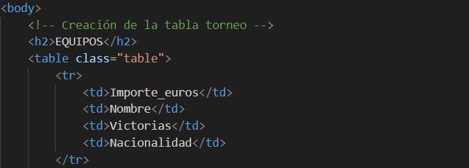

Para esta transformación de un documento xml a un documento html gracias a un documento .xsl por medio del terminal de ubuntu, tomaremos de referencia el documento .xml de a continuación
torneo.xml
En este documento se nos describe en un hipotetico torneo de videojuegos del cual queremos obtener una tabla html en la que se recojan los siguientes datos:
Y de los equipos:
Una vez tengamos claro los datos a tener en cuenta, comenzamos con la transformación
XSL, siglas en inglés de eXtensible Stylesheet Language, es una familia de lenguajes desarrollados por el World Wide Web Consortium que permiten describir cómo debe ser presentada la información contenida en un documento XML.
Es decir,XSL (Extensible Stylesheet Language) es el lenguaje utilizado para especificar reglas, mientras que XML (Extensible Markup Language) es el lenguaje utilizado para los datos que forman una entrada de las reglas.
Comenzamos en la primera linea declarando que este archivo es un documento xml.
Posteriormente en la segunda linea iniciamos el estilo
xslt,xmlns:xsl="http://www.w3.org/1999/XSL/Transform":
Especifica el espacio de nombres XML para los elementos XSLT.
En la tercera linea definimos una plantilla que se aplicara al nodo raiz del documento, es decir, a todo el documento
gracias a la sentencia "match="/".
Por ultimo comenzamos a definir como si de un documento html se tratase, con titulos, hojas de estilo,...
Dentro del contenido de nuestro archivo, es decir el body, comenzamos a crear las tablas en las cuales encontraremos los datos de las tablas o table data "td". Estos seran definidos dentro de "tr" para su posterior declaración.
Comenzamos a declarar los elementos que formaran parte de la tabla en el mismo orden en el cual hemos definido los td.
Al declarar los datos de la tabla debemos de tener en cuenta lo anteriormente citado, ademas de hacerlo con los respectivos nombres del archivo xml original y si
el elemento que queremos tener en nuestra tabla, se trata de un atributo en el xml original, bastara con colocar "@" antes del nombre del elemento original
Tambien es muy importante saber desde que ruta del XPATH nos situaremos para realizar dichas declaraciones, ya que de nada servira declarar sintacticamente bien el elemento si no hemos definido la ruta desde la cual empezara a declararlos.
Con el parametro "sort" indicamos que ordene los datos, en este caso el orden sera por el nombre del equipo en orden alfabético
Para crear la siguiente tabla realizaremos el mismo procedimiento que en la anterior
En esta creación, se pueden ver más modificaciones en el orrden de la tabla. Ahora, la tabla estara ordenada conforme al jugador que mas bajas haya realizado ademas de añadir color a la tabla. Si el jugador juega en la plataforma de PC tendra un color azul y de lo contrario, si juega en consola, poseera un color rojo.
Listo, tu documento .xsl deberia quedar como este